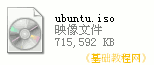
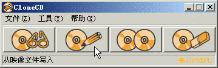
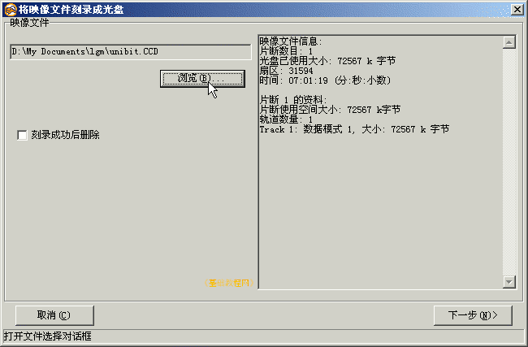
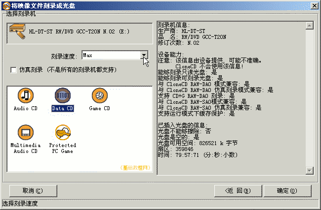
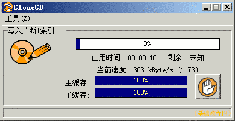

光盘刻录基础教程
作者：TeliuTe 来源：基础教程网
映像文件是一个虚拟光盘文件，我们可以把它刻录到真正的光盘上，下面我们来看一个练习；
1、准备映像文件
1）许多 Linux 操作系统，如 Ubuntu 等会提供映像文件下载，用户下载这些映像文件，然后刻录成系统安装光盘；

2）镜像文件存放在较大的磁盘分区中，C:盘系统盘有足够的空间，清理临时文件，关闭其他不用的程序，另外刻录速度选择较慢可以保证成功率；
2、刻录映像
1）启动克隆ccd，在主窗口选择第二个按钮，刻录映像到光盘；

2）在出来的面板中，点“浏览”找到映像文件，在刻录机中放入空白光盘，然后点“下一步”继续；

3）点“刻录速度”按钮，选择一个合适的速度，根据映像光盘类型选择；

4）检查一下无误后，点“确定”开始刻录，稍等完成后后光盘自动弹出；

5）刻录前注意关闭不需要的程序，刻录过程中也不要做其他干扰的操作，耐心等待刻录完成；
6）取出光盘关好托盘，这样就制作好了一张光盘；
本节学习了从映像文件刻录光碟的基本方法，如果你成功地完成了练习，请继续学习下一课内容；
本教程由86团学校TeliuTe制作|著作权所有
基础教程网：http://teliute.org/
美丽的校园……
转载和引用本站内容，请保留作者和本站链接。